คู่มือใช้งานเครื่องมือ · ระดับ Free
ประสิทธิภาพกังหันก๊าซ
Gas Turbine Performance Calculator
FREE
สำหรับช่างเทคนิคและวิศวกรที่เพิ่งเริ่มงาน — อ่านแล้วทำตามได้เอง
ใช้เวลาฝึกประมาณ 60 นาที
เคสตัวอย่าง: โรงงาน A กังหันก๊าซผลิตไฟฟ้าวัฏจักรเดี่ยว พิกัด 43,500 kW (เคสแต่งขึ้น)
ทางเข้า: หน้ารวมเครื่องมือ Free (ไม่ต้องล็อกอิน)
อ.หนึ่ง กลับทวี / Aj. Nueng Klubtavee
tripleeenergytools.com
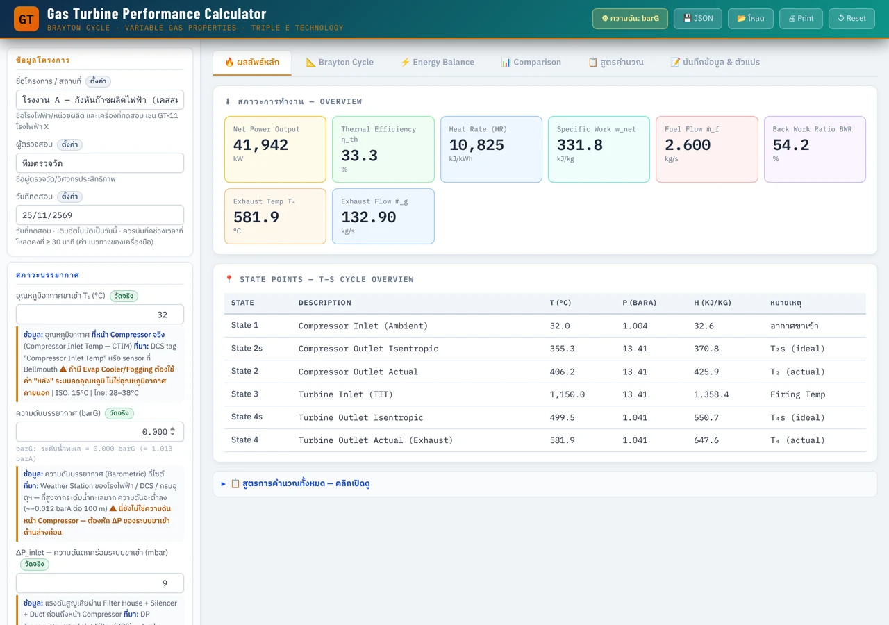
หน้าจอเครื่องมือ — เปิดได้จากเมนู Free ของเว็บไซต์
รุ่นเครื่องมือ: Free commit b68a0d7 · จับภาพ 25 พ.ย. 2569 · คู่มือ Rev00
เครื่องมือนี้ตอบคำถามอะไร
คู่มือใช้งาน · ประสิทธิภาพกังหันก๊าซ (Gas Turbine Performance Calculator) · ระดับ Free
2 / 37
| คำถามหน้างาน | ดูที่ | เคสโรงงาน A ได้ |
|---|---|---|
| กังหันก๊าซแปลงเชื้อเพลิงเป็นไฟฟ้าได้กี่ % | แท็บ ผลลัพธ์หลัก | η_th 33.3 % |
| ผลิตไฟ 1 kWh ใช้พลังงานเชื้อเพลิงเท่าไร | แท็บ ผลลัพธ์หลัก | Heat Rate 10,825 kJ/kWh |
| งานกังหันถูกคอมเพรสเซอร์ใช้ไปเท่าไร | แท็บ Energy Balance | BWR 54.2 % (51,239 จาก 94,469 kW) |
| อุณหภูมิในวัฏจักรแต่ละจุดเป็นเท่าไร | ตาราง State Points | T₂ 406.2 · T₄ 581.9 °C |
| ต่างจากพิกัดแค่ไหน | แท็บ Comparison | η +0.3 จุด · กำลัง -3.6% |
| ระบบลดอุณหภูมิอากาศ / Regenerator ช่วยได้เท่าไร | ตัวเลือกในแถบข้าง | ลองเปลี่ยนแล้วเทียบ (What-if) |
💡 เคล็ดลับ
สมบัติก๊าซแปรตามอุณหภูมิ (NASA 7 สัมประสิทธิ์) · กด คำนวณประสิทธิภาพ ทุกครั้งที่แก้ค่า · การ์ด Pro TH-GTB-01 ยกจากเครื่องมือนี้ ให้ตัวเลขเท่ากันทุกค่า และเพิ่มภาพการทำงานของระบบ
แผนที่หน้าจอ
คู่มือใช้งาน · ประสิทธิภาพกังหันก๊าซ (Gas Turbine Performance Calculator) · ระดับ Free
3 / 37
1
2
3
4
5
1
ปุ่มหน่วยความดัน — ค่าตั้งต้น barG
2
บันทึก / โหลดไฟล์งาน JSON
3
6 แท็บ: ผลลัพธ์หลัก · Brayton Cycle · Energy Balance · Comparison · สูตรคำนวณ · บันทึกข้อมูล & ตัวแปร
4
แถบข้าง — ช่องกรอกทั้งหมด 9 หมวด และปุ่มคำนวณ (ด้านล่าง)
5
ผลลัพธ์หลัก — ตัวเลขสำคัญ 8 ค่า แสดงหลังกดคำนวณ
กรอกที่แถบข้าง → กด ▶ คำนวณประสิทธิภาพ → ดูผลทีละแท็บ
ป้ายเล็กข้างช่องกรอกบอกชนิดค่า: วัดจริง · ออกแบบ · ตั้งค่า
💡 เคล็ดลับ
ปุ่ม Reset โหลดหน้าใหม่และล้างค่าที่กรอก — บันทึก JSON ไว้ก่อนถ้ายังต้องใช้
เปิดบนมือถือ และสลับภาษา
คู่มือใช้งาน · ประสิทธิภาพกังหันก๊าซ (Gas Turbine Performance Calculator) · ระดับ Free
4 / 37
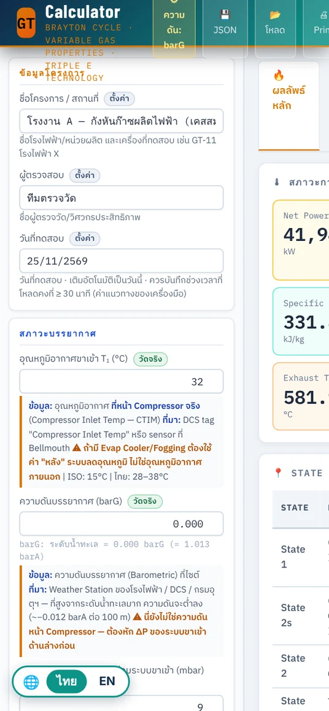
เปิดบนมือถือได้ แต่หน้าจอแคบ — แถบข้างอยู่ซ้าย แท็บผลอยู่ขวา ต้องเลื่อนซ้าย-ขวาหรือซูมดู (ภาพนี้จับที่กว้าง 390 px)
ปุ่ม ไทย | EN ลอยอยู่ด้านล่าง — เครื่องมือมีฉบับอังกฤษครบทุกข้อความ กดสลับได้
เหมาะกับใช้เก็บค่าจาก DCS หน้างาน แล้วบันทึก JSON ไปเปิดต่อบนคอมพิวเตอร์
⚠️ ระวัง
ความดันตั้งต้นเป็น barG — ความดันบรรยากาศที่ระดับน้ำทะเล = 0.000 barG (= 1.013 barA) ห้ามกรอก 1.013 ในโหมด barG
คำศัพท์ 8 คำที่ต้องรู้ก่อนเริ่ม
คู่มือใช้งาน · ประสิทธิภาพกังหันก๊าซ (Gas Turbine Performance Calculator) · ระดับ Free
5 / 37
| คำ | ความหมายแบบสั้น | จำง่าย ๆ |
|---|---|---|
| Brayton cycle | วัฏจักรกังหันก๊าซ: อัดอากาศ → เผาไหม้ → ขยายตัว → ไอเสีย | จุด ① ② ③ ④ |
| rₚ | อัตราส่วนความดัน P₂ ÷ P₁ (ความดันสัมบูรณ์) | ได้จากวัด CDP |
| TIT / T₃ | อุณหภูมิก๊าซร้อนเข้ากังหัน (Firing Temp) | ตัวกำหนดสมรรถนะหลัก |
| η_c · η_t | ประสิทธิภาพไอเซนโทรปิกของคอมเพรสเซอร์ · กังหัน | ยิ่งสูงยิ่งดี |
| η_th | ไฟฟ้า ÷ พลังงานเชื้อเพลิงที่ป้อน (ฐาน LHV) | HR = 3,600 ÷ η_th |
| Heat Rate (HR) | พลังงานเชื้อเพลิงต่อไฟฟ้า 1 kWh (kJ/kWh) | ยิ่งต่ำยิ่งดี |
| BWR | งานคอมเพรสเซอร์ ÷ งานกังหัน | กังหันก๊าซราวครึ่งหนึ่ง |
| CTIM · CDP | อุณหภูมิหน้าคอมเพรสเซอร์ · ความดันขาออกคอมเพรสเซอร์ | tag ใน DCS |
💡 เคล็ดลับ
LHV = ค่าความร้อนต่ำของเชื้อเพลิง (kJ/kg) — เครื่องมือคิด η_th และ Heat Rate บนฐาน LHV
เตรียมข้อมูลก่อนเริ่ม
คู่มือใช้งาน · ประสิทธิภาพกังหันก๊าซ (Gas Turbine Performance Calculator) · ระดับ Free
6 / 37
| ข้อมูล | แหล่ง (ตามคำอธิบายในเครื่องมือ) | โรงงาน A |
|---|---|---|
| T₁ หน้าคอมเพรสเซอร์ · RH | DCS (CTIM) · Weather Station | 32 °C · 70 % |
| ความดันบรรยากาศ · ΔP ไส้กรองขาเข้า | Barometer · DP Transmitter ของ Inlet Filter | 0.000 barG · 9 mbar |
| ความดันขาออกคอมเพรสเซอร์ CDP | DCS tag CDP | 12.4 barG |
| อัตราไหลเชื้อเพลิง · LHV | Fuel Gas Flow Meter · ใบวิเคราะห์ก๊าซรายเดือน | 2.60 kg/s · 48500 kJ/kg |
| TIT · η_c · η_t · η_cc | Datasheet / OEM / Performance Test | 1150 °C · 86 · 88 · 99 % |
| η_mech · η_gen · ΔP ไอเสีย | OEM Spec · Nameplate Generator · DCS | 99 · 98 % · 28 mbar |
| พิกัด: กำลัง · η_th · Heat Rate | Nameplate · Commissioning Test Report | 43500 kW · 33 % · 10909 |
⚠️ ระวัง
เก็บทุกค่าในช่วงเวลาเดียวกัน ขณะโหลดคงที่ (เครื่องมือแนะนำ ≥ 30 นาที — ค่าแนวทางของเครื่องมือ)
ขั้นที่ 1
แถบข้าง: ข้อมูลโครงการ
คู่มือใช้งาน · ประสิทธิภาพกังหันก๊าซ (Gas Turbine Performance Calculator) · ระดับ Free
7 / 37
1
2
3
1
ชื่อโรงไฟฟ้า / หน่วยผลิต และเครื่องที่ทดสอบ (ขึ้นหัวรายงาน)
2
ผู้ตรวจวัด
3
วันที่ทดสอบ (เติมวันนี้ให้อัตโนมัติ แก้ได้)
โรงงาน A: โรงงาน A — กังหันก๊าซผลิตไฟฟ้า (เคสสมมุติ)
ชื่อเครื่องในช่องนี้ใช้ชื่อเรียกภายในโรงงานได้ เช่น GT-1
ขั้นที่ 2
แถบข้าง: สภาวะบรรยากาศ
คู่มือใช้งาน · ประสิทธิภาพกังหันก๊าซ (Gas Turbine Performance Calculator) · ระดับ Free
8 / 37
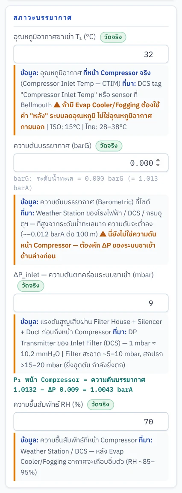
1
2
3
4
5
1
T₁ 32 °C — อุณหภูมิที่หน้าคอมเพรสเซอร์จริง
2
ความดันบรรยากาศ 0.000 barG
3
ΔP_inlet 9 mbar (ไส้กรอง + silencer + duct)
4
P₁ หน้าคอมเพรสเซอร์ = 1.0043 barA (เครื่องมือหัก ΔP ให้)
5
RH 70 %
ถ้ามี Evap Cooler / Fogging: T₁ ต้องเป็นค่าหลังระบบลดอุณหภูมิ ไม่ใช่อุณหภูมิอากาศภายนอก
กล่อง “ข้อมูล” ใต้ช่องบอกที่มาของค่าและช่วงทั่วไป — อ่านก่อนกรอก
ขั้นที่ 3
แถบข้าง: ระบบลดอุณหภูมิอากาศขาเข้า
คู่มือใช้งาน · ประสิทธิภาพกังหันก๊าซ (Gas Turbine Performance Calculator) · ระดับ Free
9 / 37
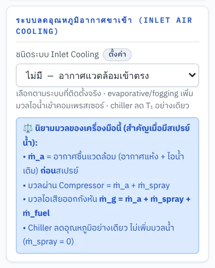
1
1
ชนิดระบบ: ไม่มี · Evaporative · Fogging · Chiller
โรงงาน A: ไม่มี — อากาศแวดล้อมเข้าตรง
เลือกตามระบบที่ติดตั้งจริง · Evaporative/Fogging เพิ่มมวลไอน้ำเข้าคอมเพรสเซอร์ (กรอก ṁ_spray) · Chiller ลด T₁ อย่างเดียว
กล่องสีฟ้าคือนิยามมวลของเครื่องมือ — อ่านเมื่อมีสเปรย์น้ำ
ขั้นที่ 4
แถบข้าง: คอมเพรสเซอร์ และหา ṁ_a จากเชื้อเพลิงที่วัดได้
คู่มือใช้งาน · ประสิทธิภาพกังหันก๊าซ (Gas Turbine Performance Calculator) · ระดับ Free
10 / 37
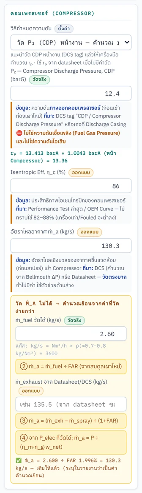
1
2
3
4
5
6
7
8
1
วิธีกำหนดความดัน: วัด P₂ (CDP) (แนะนำ) หรือกรอก rₚ จาก datasheet
2
P₂ 12.4 barG
3
rₚ = 13.413 ÷ 1.0043 = 13.36
4
η_c 86 %
5
ṁ_a = 130.3 kg/s (เติมจากตัวช่วย)
6
ṁ_fuel วัดได้ 2.60 kg/s
7
กดตัวช่วย ② ṁ_a = ṁ_fuel ÷ FAR
8
ผล: FAR 1.996 % → เติม ṁ_a ให้แล้ว
ṁ_a วัดตรงยาก — ใช้ตัวช่วย ② (เชื้อเพลิง) · ③ (ไอเสียจาก datasheet) · ④ (ไฟฟ้าที่วัดได้)
P₂ คือความดันอากาศขาออกคอมเพรสเซอร์ — ไม่ใช่ความดันเชื้อเพลิง และไม่ใช่ความดันไอเสีย
⚠️ ระวัง
ค่า ṁ_a จากตัวช่วยเป็นค่าคำนวณย้อน — ระบุในรายงานตามข้อความของเครื่องมือ · กดตัวช่วยใหม่ทุกครั้งที่แก้ T₁ · rₚ · TIT · η
ขั้นที่ 5
แถบข้าง: ห้องเผาไหม้และเชื้อเพลิง
คู่มือใช้งาน · ประสิทธิภาพกังหันก๊าซ (Gas Turbine Performance Calculator) · ระดับ Free
11 / 37
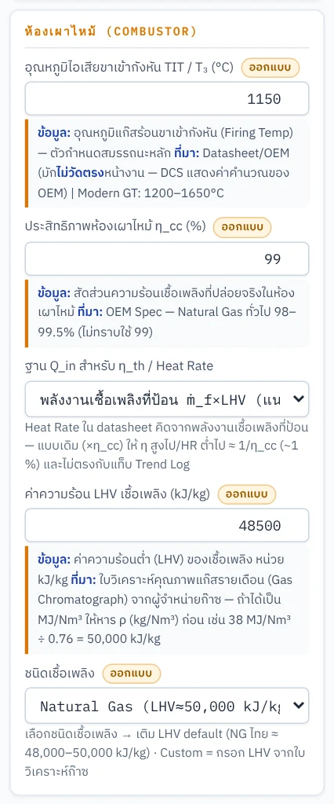
1
2
3
4
5
1
TIT / T₃ 1150 °C (datasheet — มักไม่วัดตรง)
2
η_cc 99 %
3
ฐาน Q_in: พลังงานเชื้อเพลิงที่ป้อน ṁ_f × LHV (แนะนำ)
4
LHV 48500 kJ/kg จากใบวิเคราะห์ก๊าซ
5
ชนิดเชื้อเพลิง: Natural Gas
เลือกชนิดเชื้อเพลิงแล้วเครื่องมือเติม LHV ค่าตั้งต้น — กรอก LHV จริงทับตามใบวิเคราะห์
ใบวิเคราะห์ให้ MJ/Nm³: หารด้วยความหนาแน่น (kg/Nm³) ก่อน — ตัวอย่างในเครื่องมือ 38 ÷ 0.76 = 50,000 kJ/kg
💡 เคล็ดลับ
ฐาน “ความร้อนที่ก๊าซรับ (×η_cc)” เป็นแบบเดิม ให้ η สูงไป / HR ต่ำไปราว 1/η_cc — ใช้ฐานเชื้อเพลิงที่ป้อนเพื่อเทียบกับ datasheet
ขั้นที่ 6
แถบข้าง: กังหัน และ Regenerator
คู่มือใช้งาน · ประสิทธิภาพกังหันก๊าซ (Gas Turbine Performance Calculator) · ระดับ Free
12 / 37
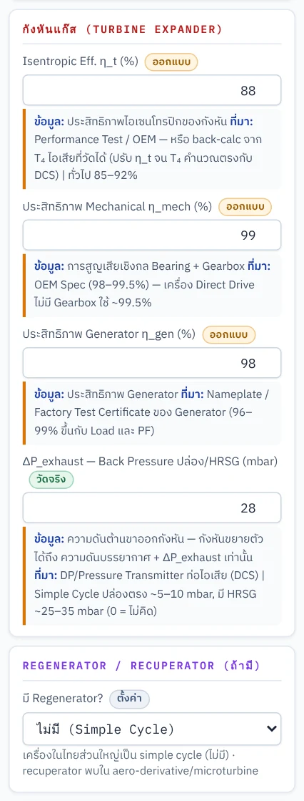
1
2
3
4
5
1
η_t 88 %
2
η_mech 99 %
3
η_gen 98 %
4
ΔP_exhaust 28 mbar (มี HRSG ท้ายเครื่อง)
5
มี Regenerator? — โรงงาน A: ไม่มี (Simple Cycle)
กังหันขยายตัวได้ถึงความดันบรรยากาศ + ΔP_exhaust เท่านั้น — ปล่องตรงราว 5–10 mbar มี HRSG ราว 25–35 mbar (ตามคำอธิบายในเครื่องมือ)
η_t ปรับได้จนค่า T₄ ที่คำนวณตรงกับ T₄ ใน DCS (วิธีที่เครื่องมือแนะนำ)
ขั้นที่ 7
แถบข้าง: ค่าพิกัด กำลังไฟฟ้าวัดได้ และปุ่มคำนวณ
คู่มือใช้งาน · ประสิทธิภาพกังหันก๊าซ (Gas Turbine Performance Calculator) · ระดับ Free
13 / 37
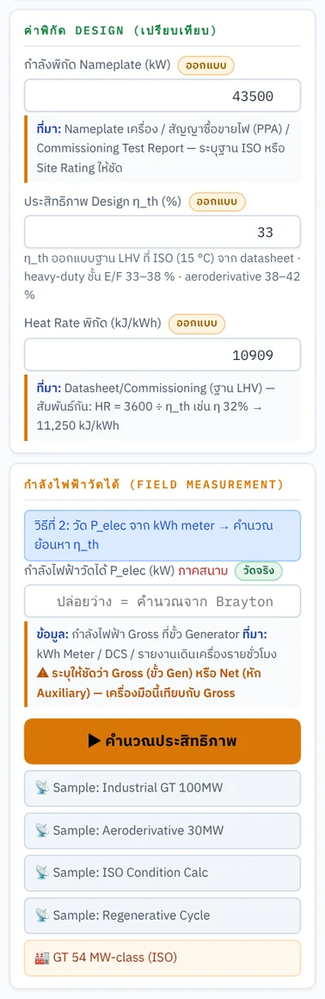
1
2
3
4
5
1
กำลังพิกัด 43500 kW
2
η_th ออกแบบ 33 %
3
Heat Rate พิกัด 10909 kJ/kWh
4
P_elec วัดได้ — ปล่อยว่าง = คำนวณจาก Brayton
5
▶ คำนวณประสิทธิภาพ — กดทุกครั้งหลังแก้ค่า
โรงงาน A รอบนี้ปล่อยช่อง P_elec ว่าง — ใส่ค่าวัดได้ภายหลัง (What-if)
ปุ่ม Sample ใต้ปุ่มคำนวณโหลดตัวอย่างสมมุติของเครื่องมือ — กดแล้วค่าที่กรอกเดิมถูกแทนที่
คำใบ้ใต้ช่อง η_th ออกแบบเป็นช่วงทั่วไปตามชั้นเครื่อง (heavy-duty ชั้น E/F · aeroderivative) — ใช้ค่าจาก datasheet ของเครื่องจริง
💡 เคล็ดลับ
พิกัดต้องเป็นฐานเดียวกับที่วัด (ISO หรือ Site Rating · Gross) — ระบุให้ชัดตามข้อความของเครื่องมือ
ขั้นที่ 8
แท็บ ผลลัพธ์หลัก: ภาพรวมสภาวะการทำงาน
คู่มือใช้งาน · ประสิทธิภาพกังหันก๊าซ (Gas Turbine Performance Calculator) · ระดับ Free
14 / 37
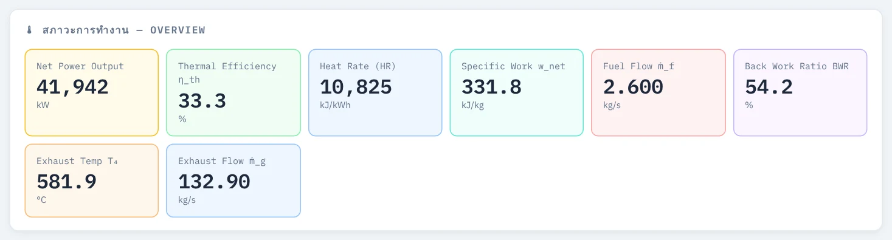
1
2
3
4
5
6
1
Net Power 41,942 kW
2
η_th 33.3 %
3
Heat Rate 10,825 kJ/kWh
4
ṁ_fuel 2.600 kg/s
5
BWR 54.2 %
6
T₄ ไอเสีย 581.9 °C
ṁ_fuel ที่คำนวณได้ 2.600 kg/s ตรงกับที่วัด 2.60 kg/s — เพราะ ṁ_a หามาจากเชื้อเพลิงที่วัด
BWR 54.2 % = งานกังหันครึ่งหนึ่งถูกใช้หมุนคอมเพรสเซอร์ — η_c และ η_t จึงมีผลต่อกำลังมาก
ขั้นที่ 9
แท็บ ผลลัพธ์หลัก: ตาราง State Points
คู่มือใช้งาน · ประสิทธิภาพกังหันก๊าซ (Gas Turbine Performance Calculator) · ระดับ Free
15 / 37
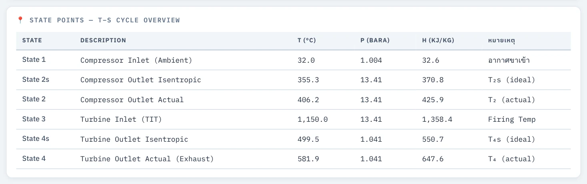
1
2
3
4
1
T₂s 355.3 °C — อัดแบบอุดมคติ
2
T₂ 406.2 °C — อัดจริง (η_c 86 %)
3
T₃ 1,150.0 °C (TIT)
4
T₄ 581.9 °C ที่ P₄ 1.041 barA
T₂ สูงกว่า T₂s เพราะการสูญเสียในคอมเพรสเซอร์ · T₄ สูงกว่า T₄s (499.5 °C) เพราะการสูญเสียในกังหัน
เทียบ T₂ กับ CDT ใน DCS และ T₄ กับ TTXM — ค่าคำนวณต่างจากค่าวัดมาก = η_c / η_t ที่กรอกไม่ตรงสภาพเครื่อง
💡 เคล็ดลับ
h ในตารางอ้างอิง 0 °C ตามบรรทัดแทนค่าของเครื่องมือ — ใช้ดูส่วนต่าง Δh ไม่ใช่ค่าสัมบูรณ์
ขั้นที่ 10
แท็บ Brayton Cycle: การแทนค่าทีละขั้น
คู่มือใช้งาน · ประสิทธิภาพกังหันก๊าซ (Gas Turbine Performance Calculator) · ระดับ Free
16 / 37
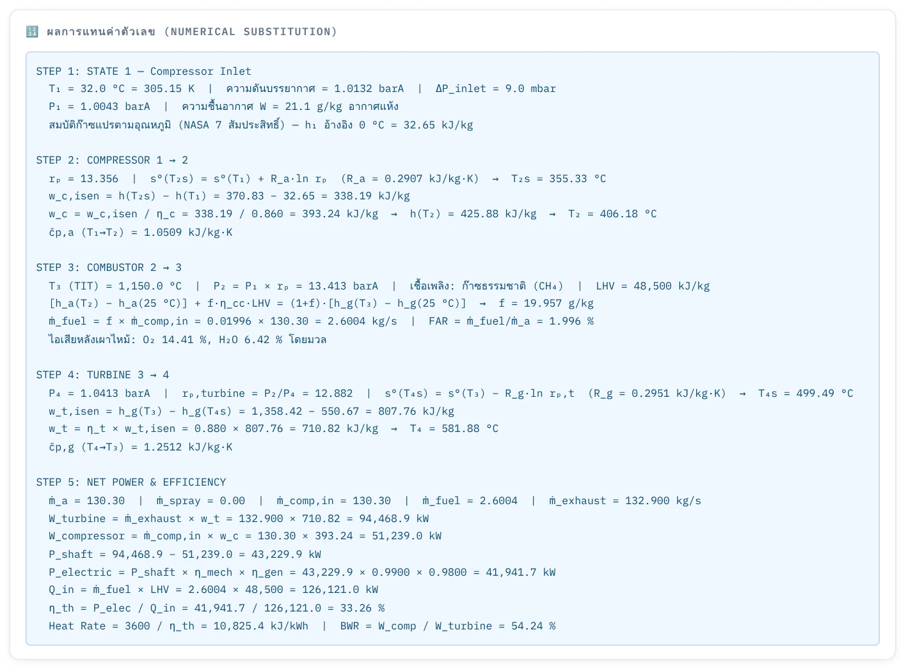
1
1
STEP 1–5: State 1 → คอมเพรสเซอร์ → ห้องเผาไหม้ → เทอร์ไบน์ → กำลังและประสิทธิภาพ
คอมเพรสเซอร์: w_c,isen 338.19 ÷ η_c → w_c 393.24 kJ/kg · ห้องเผาไหม้: f = 19.957 g/kg (FAR 1.996 %)
เทอร์ไบน์: rₚ,turbine 12.882 · w_t,isen 807.76 × η_t = w_t 710.82 kJ/kg
ไอเสียหลังเผาไหม้ยังมี O₂ 14.41 % โดยมวล — กังหันก๊าซใช้อากาศส่วนเกินมาก
💡 เคล็ดลับ
ด้านบนของแท็บนี้มีผังวัฏจักรและสูตรทั่วไปของแต่ละ State — ใช้คู่กับบรรทัดแทนค่าเวลาทวนผล
ทวนผลด้วยมือ: โรงงาน A
คู่มือใช้งาน · ประสิทธิภาพกังหันก๊าซ (Gas Turbine Performance Calculator) · ระดับ Free
17 / 37
| ค่า | สูตร | แทนค่าจากหน้าจอ | ผล |
|---|---|---|---|
| P_shaft | W_turbine − W_compressor | 94,469 − 51,239 | 43,230 kW |
| P_electric | P_shaft × η_mech × η_gen | 43,230 × 0.99 × 0.98 | 41,942 kW |
| Q_in | ṁ_fuel × LHV | 2.600 × 48500 | ≈ 126,100 kW |
| η_th | P_electric ÷ Q_in | 41,942 ÷ 126,121 | 33.3 % |
| Heat Rate | 3,600 ÷ η_th | 3,600 ÷ (41,942 ÷ 126,121) | 10,825 kJ/kWh |
| BWR · w_net | W_c ÷ W_t · P_shaft ÷ ṁ_a | 51,239 ÷ 94,469 · 43,230 ÷ 130.3 | 54.2 % · 331.8 |
Q_in หน้าจอ 126,121 kW ต่างจากคิดมือเล็กน้อยเพราะ ṁ_fuel บนหน้าจอปัดเหลือ 3 ตำแหน่ง (บรรทัดแทนค่าใช้ 4 ตำแหน่ง)
ṁ_a จากตัวช่วย: 2.60 ÷ (1.996 %) = 130.3 kg/s
✓ ผ่าน
คิดได้ตรงกับหน้าจอ = เข้าใจที่มาของตัวเลข — ใช้ตรวจเมื่อผลดูแปลก
ขั้นที่ 11
แท็บ Energy Balance
คู่มือใช้งาน · ประสิทธิภาพกังหันก๊าซ (Gas Turbine Performance Calculator) · ระดับ Free
18 / 37
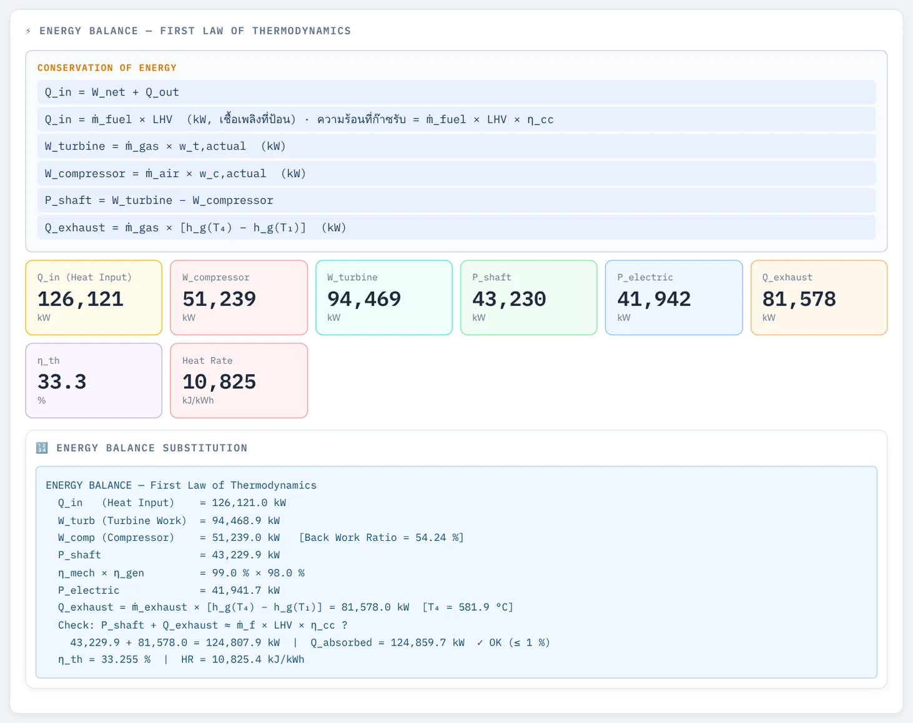
1
2
3
4
5
6
1
Q_in 126,121 kW
2
W_compressor 51,239 kW
3
W_turbine 94,469 kW
4
P_shaft 43,230 kW
5
P_electric 41,942 kW
6
Q_exhaust 81,578 kW
ตรวจสมดุล: P_shaft + Q_exhaust = 124,807.9 kW เทียบ Q_absorbed 124,859.7 kW → ✓ OK (≤ 1 %)
Q_exhaust 81,578 kW คือความร้อนที่ HRSG นำไปผลิตไอน้ำได้ — โรงงาน A มี HRSG ท้ายเครื่อง
💡 เคล็ดลับ
สมดุลไม่ปิด (เกิน 1 %) = ตรวจค่าที่กรอก โดยเฉพาะ LHV และหน่วยความดัน
ขั้นที่ 12
แท็บ Comparison: เทียบพิกัดและสรุปผล
คู่มือใช้งาน · ประสิทธิภาพกังหันก๊าซ (Gas Turbine Performance Calculator) · ระดับ Free
19 / 37
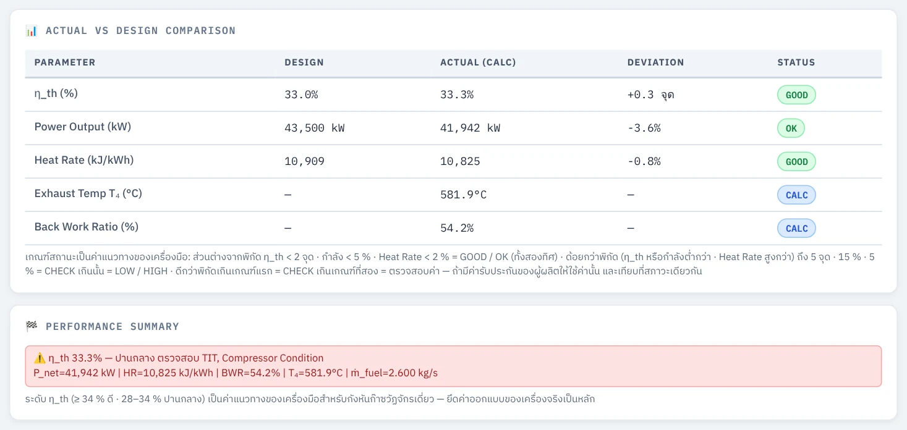
1
2
3
4
1
η_th: 33.0% → 33.3% = +0.3 จุด (GOOD)
2
กำลัง: 43,500 kW → 41,942 kW = -3.6% (OK)
3
Heat Rate: 10,909 → 10,825 = -0.8% (GOOD)
4
ข้อสรุป: ⚠️ η_th 33.3% — ปานกลาง ตรวจสอบ TIT, Compressor Condition
ส่วนต่าง η_th เป็นจุด (ผลต่างของร้อยละ) · กำลังและ Heat Rate เป็น % ของค่าพิกัด
ป้ายดูทั้งขนาดและทิศทาง — ด้อยกว่าพิกัด: CHECK → LOW / HIGH · ดีกว่าพิกัดมาก: CHECK → ตรวจสอบค่า (สไลด์ถัดไป)
กำลังต่ำกว่าพิกัด -3.6% ที่ T₁ 32 °C — พิกัดฐาน ISO 15 °C ต้องเทียบที่สภาวะเดียวกันก่อนสรุปว่าเสื่อม
⚠️ ระวัง
ถ้ามีค่ารับประกันของผู้ผลิต ให้ใช้ค่านั้น และเทียบที่สภาวะเดียวกัน (ข้อความของเครื่องมือ)
ป้ายเทียบพิกัด 4 แบบ: อ่านอย่างไร
คู่มือใช้งาน · ประสิทธิภาพกังหันก๊าซ (Gas Turbine Performance Calculator) · ระดับ Free
20 / 37
| ป้าย | ความหมาย (ตามเกณฑ์ใต้ตารางของเครื่องมือ) | ตัวอย่างในเล่มนี้ → ป้ายที่ขึ้น |
|---|---|---|
| GOOD / OK (เขียว) | ต่าง < 2 จุด · < 5 % · < 2 % (ทั้งสองทิศ) | โรงงาน A: η_th +0.3 จุด → GOOD |
| CHECK (เหลือง) | เกินเกณฑ์แรก ไม่เกิน 5 จุด · 15 % · 5 % (ด้อย/ดีกว่า) | η_c 83 %: กำลัง -7.9% → CHECK |
| LOW / HIGH (แดง) | ด้อยกว่าพิกัดเกินเกณฑ์ที่สอง | P_elec วัด 36,000: HR +15.6% → HIGH |
| ตรวจสอบค่า (ส้ม) | ดีกว่าพิกัดเกินเกณฑ์ที่สอง — ทวนก่อนใช้ | Regenerator: HR -14.8% → ตรวจสอบค่า |
เกณฑ์แรก / ที่สอง: η_th 2 / 5 จุด · กำลัง 5 / 15 % · Heat Rate 2 / 5 % · ด้อยกว่า = η_th หรือกำลังต่ำกว่า (LOW) · Heat Rate สูงกว่า (HIGH)
ดีกว่าพิกัดเล็กน้อยได้ CHECK เช่น Chiller: HR -3.2% → CHECK
ผลเป็นไปไม่ได้ทางฟิสิกส์ (กล่อง ⛔) แถว η_th ขึ้น ⛔ ตรวจสอบ แทนป้ายเหล่านี้
💡 เคล็ดลับ
เกณฑ์ทั้งหมดเป็นค่าแนวทางของเครื่องมือ (หน้าจอระบุไว้) — ถ้ามีค่ารับประกันของผู้ผลิต ให้ใช้ค่านั้น และเทียบที่สภาวะเดียวกัน
เห็นป้าย “ตรวจสอบค่า”: ต้องทวนอะไร
คู่มือใช้งาน · ประสิทธิภาพกังหันก๊าซ (Gas Turbine Performance Calculator) · ระดับ Free
21 / 37
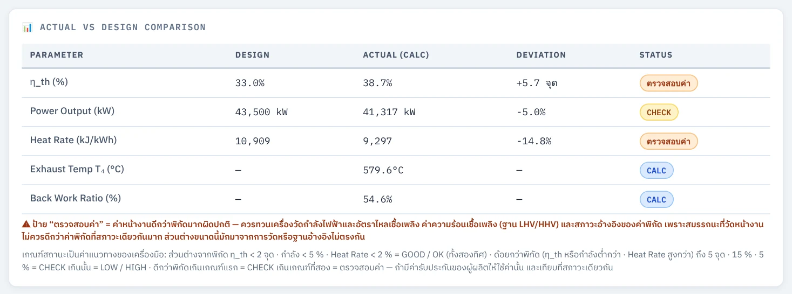
1
2
3
4
1
η_th 33.0% → 38.7% = +5.7 จุด → ตรวจสอบค่า
2
กำลัง -5.0% → CHECK (ด้อยกว่าพิกัด)
3
Heat Rate 10,909 → 9,297 = -14.8% → ตรวจสอบค่า
4
บรรทัดส้มใต้ตาราง — ขึ้นเมื่อมีป้ายตรวจสอบค่าอย่างน้อย 1 ป้าย
ทวนตามบรรทัดส้มของเครื่องมือ: ① เครื่องวัดกำลังไฟฟ้า และอัตราไหลเชื้อเพลิง ② ค่าความร้อนเชื้อเพลิง (ฐาน LHV/HHV) ③ สภาวะอ้างอิงของค่าพิกัด
เคสนี้ (เปิด Regenerator ε 70 % ในเคสโรงงาน A): ค่าพิกัดในช่องเป็นของวัฏจักรเดี่ยว → ข้อ ③ ไม่ตรง — ใช้พิกัดของเครื่องแบบเดียวกันก่อนเทียบ
ส่วนต่างขนาดนี้มักมาจากการวัดหรือฐานอ้างอิงไม่ตรงกัน (ข้อความของเครื่องมือ) — ไม่ใช่เครื่องดีขึ้นจริง
⚠️ ระวัง
ยังหาสาเหตุไม่ได้ อย่ารายงานว่าเครื่องดีกว่าพิกัด — พบค่าที่ผิดหรือฐานไม่ตรง ให้แก้ตามของจริงแล้วกดคำนวณใหม่ (อย่าปรับค่าเพียงเพื่อให้ป้ายหาย)
ลองเปลี่ยนค่า (What-if): อุณหภูมิอากาศขาเข้าและระบบลดอุณหภูมิ
คู่มือใช้งาน · ประสิทธิภาพกังหันก๊าซ (Gas Turbine Performance Calculator) · ระดับ Free
22 / 37
| เปลี่ยนค่า | P_electric (kW) | η_th (%) | HR (kJ/kWh) | T₂ (°C) |
|---|---|---|---|---|
| T₁ 36 °C (บ่ายร้อน) | 41,488 | 33.0 | 10,897 | 413.8 |
| T₁ 32 °C (โรงงาน A) | 41,942 | 33.3 | 10,825 | 406.2 |
| Evaporative: T₁ 26 °C · RH 95 % · ṁ_spray 0.35 | 43,154 | 33.5 | 10,738 | 393.4 |
| Chiller: T₁ 15 °C | 44,236 | 34.1 | 10,556 | 372.2 |
ทำเอง: เปลี่ยนชนิดระบบ (แถบข้าง) → แก้ T₁ / RH / ṁ_spray → กดคำนวณ → อ่านผล → แก้กลับ
อากาศเย็นลง: งานอัดลด (T₂ ต่ำลง) → กำลังและ η_th เพิ่ม · ทุก what-if ในตารางนี้คง ṁ_a 130.3 kg/s
⚠️ ระวัง
เครื่องมือไม่เพิ่ม ṁ_a ให้เองเมื่ออากาศเย็นลง — ผลจริงของระบบลดอุณหภูมิต้องหา ṁ_a ใหม่จากค่าวัดหลังติดระบบ
ลองเปลี่ยนค่า (What-if): Regenerator สภาพเครื่อง และไฟฟ้าที่วัดได้
คู่มือใช้งาน · ประสิทธิภาพกังหันก๊าซ (Gas Turbine Performance Calculator) · ระดับ Free
23 / 37
| เปลี่ยนค่า | P_electric (kW) | η_th (%) | HR (kJ/kWh) | ṁ_fuel (kg/s) |
|---|---|---|---|---|
| โรงงาน A (เคสหลัก) | 41,942 | 33.3 | 10,825 | 2.600 |
| มี Regenerator ε 70 % | 41,317 | 38.7 | 9,297 | 2.200 |
| η_c 86 → 83 % (คอมเพรสเซอร์สกปรก) | 40,079 | 32.3 | 11,144 | 2.558 |
| ΔP_inlet 9 → 25 mbar (ไส้กรองตัน) | 41,494 | 33.0 | 10,899 | 2.590 |
| กรอก P_elec วัดได้ 40,800 kW | 40,800 | 32.3 | 11,128 | 2.600 |
Regenerator ใช้ไอเสียอุ่นอากาศ → เชื้อเพลิงลด กำลังลดเล็กน้อย
ใส่ P_elec วัดได้: เครื่องมือใช้ค่าวัดเป็นกำลังและคิด η_th = P_วัด ÷ Q_in — ได้ 32.3 % ต่ำกว่าแบบจำลอง = η ที่กรอกดีกว่าเครื่องจริง
เปลี่ยนฐาน Q_in เป็น “ความร้อนที่ก๊าซรับ”: η_th 33.6 % · HR 10,717 (สูง/ต่ำไปราว 1/η_cc)
💡 เคล็ดลับ
η_c ลด 3 จุด กำลังหาย -7.9% จากพิกัด — สอดคล้องกับข้อความในตารางตัวแปรของเครื่องมือ (BWR สูง η_c จึงมีผลมาก)
แท็บ ผลลัพธ์หลัก: Regenerator Analysis (เมื่อเลือกมี)
คู่มือใช้งาน · ประสิทธิภาพกังหันก๊าซ (Gas Turbine Performance Calculator) · ระดับ Free
24 / 37
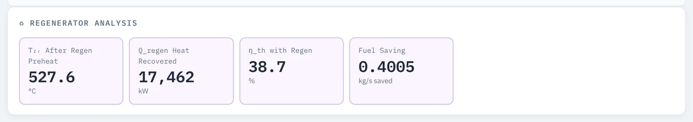
1
2
3
1
T₂r อากาศหลังอุ่น 527.6 °C
2
η_th วัฏจักร Regenerative 38.7 %
3
เชื้อเพลิงที่ลดได้ 0.4005 kg/s
กล่องนี้ปรากฏเมื่อเลือก “มี Regenerator” เท่านั้น — สูตร ε_regen = (T₂r − T₂) ÷ (T₄ − T₂) อยู่ในแท็บสูตรคำนวณ (Boyce Ch. 2)
วิธีเปิด: แถบข้างขั้นที่ 6 เลือก มี (Regenerative Cycle) · Effectiveness ε 70 % · กดคำนวณ — เชื้อเพลิงลดจาก 2.600 เหลือ 2.200 kg/s (Q_regen 17,462 kW)
Regenerator ได้ผลเมื่อ T₄ สูงกว่า T₂ มาก — rₚ สูง T₂ สูง ส่วนต่างจะน้อยลง
⚠️ ระวัง
โรงงาน A มี HRSG ใช้ความร้อนไอเสียอยู่แล้ว — Regenerator ใช้ความร้อนก้อนเดียวกัน ต้องประเมินทั้งระบบก่อนตัดสิน
แท็บ สูตรคำนวณ และแหล่งอ้างอิงของเครื่องมือ
คู่มือใช้งาน · ประสิทธิภาพกังหันก๊าซ (Gas Turbine Performance Calculator) · ระดับ Free
25 / 37
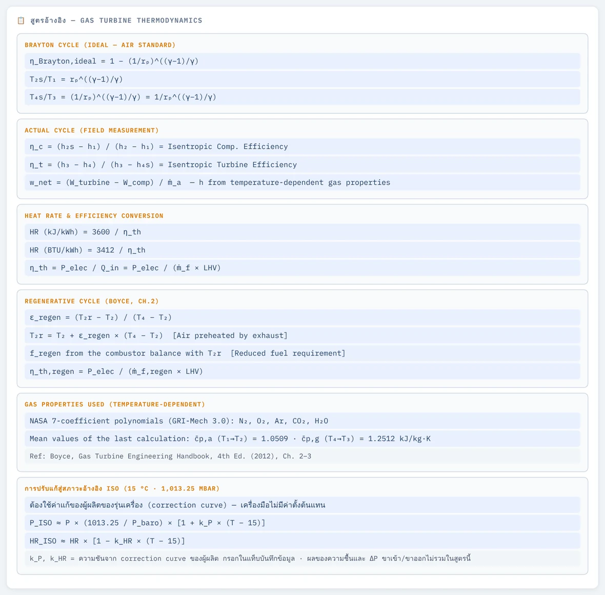
สูตร Brayton อุดมคติ (γ คงที่) · วัฏจักรจริง (η_c · η_t) · Heat Rate · Regenerative cycle · การปรับแก้สู่ ISO
สมบัติก๊าซ: NASA 7-coefficient polynomials (GRI-Mech 3.0) ของ N₂ O₂ Ar CO₂ H₂O · ค่า c̄p เฉลี่ยของการคำนวณล่าสุด: อากาศ 1.0509 · ก๊าซ 1.2512 kJ/kg·K
อ้างอิง: Boyce, *Gas Turbine Engineering Handbook*, 4th Ed. (2012), Ch. 2–3
⚠️ ระวัง
การปรับแก้ ISO ต้องใช้ correction curve ของผู้ผลิตของรุ่นเครื่อง — เครื่องมือไม่มีค่าตั้งต้นแทน
แท็บ บันทึกข้อมูล & ตัวแปร: ตารางตัวแปรที่ส่งผลต่อประสิทธิภาพ
คู่มือใช้งาน · ประสิทธิภาพกังหันก๊าซ (Gas Turbine Performance Calculator) · ระดับ Free
26 / 37
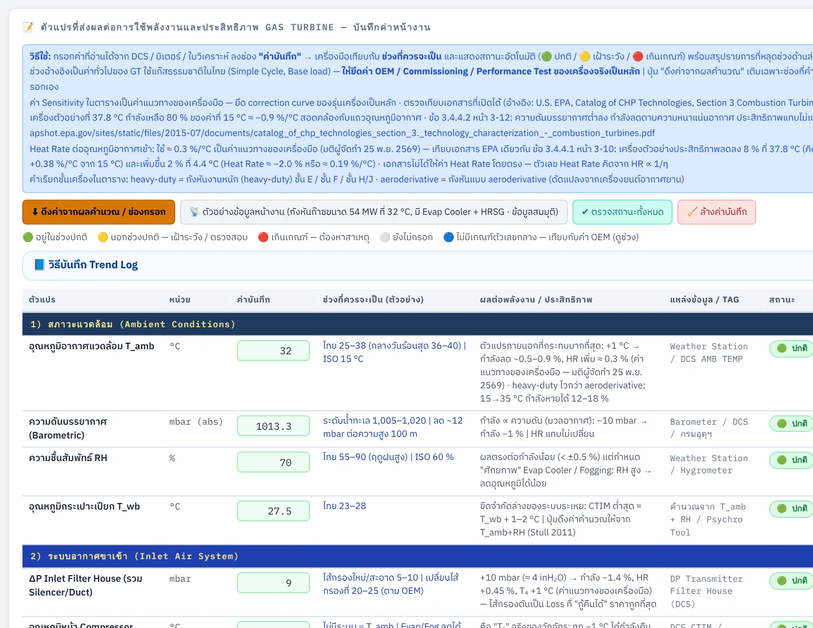
1
2
1
⬇ ดึงค่าจากผลคำนวณ / ช่องกรอก — เติมเฉพาะช่องที่คำนวณได้
2
✔ ตรวจสถานะทั้งหมด
ตาราง 35 ตัวแปร 7 หมวด: ค่าบันทึก · ช่วงที่ควรจะเป็น · ผลต่อพลังงาน · แหล่งข้อมูล / TAG · สถานะ 🟢 🟡 🔴
กล่อง “วิธีใช้”: ค่า Sensitivity เป็นค่าแนวทางของเครื่องมือ — ยึด correction curve ของรุ่นเครื่อง (เครื่องมืออ้าง U.S. EPA CHP Catalog Sec. 3) · คำเรียกชั้นเครื่อง heavy-duty / aeroderivative
แถว T_amb: +1 °C → HR เพิ่ม ≈ 0.3 % (ค่าแนวทางของเครื่องมือ) — กล่องวิธีใช้มีบรรทัดเทียบเอกสาร EPA ข้อ 3.4.4.1 หน้า 3-10 (เอกสารให้ค่า η ไม่ได้ให้ HR โดยตรง · HR คิดจาก HR ∝ 1/η)
ช่วงอ้างอิงเป็นค่าทั่วไปของกังหันก๊าซใช้ก๊าซธรรมชาติในไทย — ยึดค่า OEM / Commissioning ของเครื่องจริงเป็นหลัก (ข้อความของเครื่องมือ)
💡 เคล็ดลับ
ภาพนี้แสดงหมวด 1–2 · เลื่อนลงดูหมวด 3–7 ในเครื่องมือ · ช่องที่ปุ่มดึงค่าไม่เติม (IGV · ชั่วโมงล้าง · ก๊าซเชื้อเพลิง · มลพิษ · ไฟฟ้า) กรอกเองจาก DCS
สรุปการตรวจตัวแปร (หมวด 7 ดัชนีสมรรถนะ)
คู่มือใช้งาน · ประสิทธิภาพกังหันก๊าซ (Gas Turbine Performance Calculator) · ระดับ Free
27 / 37
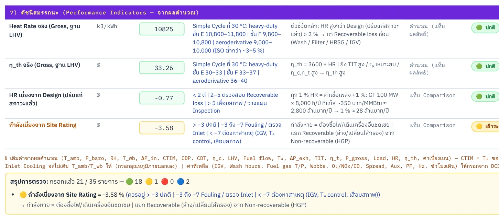
1
1
สรุป: จำนวนที่กรอกและสถานะ — รายการที่หลุดช่วงแสดงใต้ตาราง
หมวด 7 เติมจากผลคำนวณ: Heat Rate · η_th · ส่วนเบี่ยงจาก Design และ Site Rating
โรงงาน A: กำลังเบี่ยงจาก Site Rating -3.6% ขึ้น 🟡 เฝ้าระวัง (ช่วงของเครื่องมือ: > −3 % ปกติ)
⚠️ ระวัง
ป้ายในตารางตัวแปรเป็นช่วงทั่วไป — ใช้คัดกรองหาประเด็น ไม่ใช่เกณฑ์ตัดสินเครื่อง
Trend Log: ติดตาม Heat Rate และกำลังปรับแก้ ISO
คู่มือใช้งาน · ประสิทธิภาพกังหันก๊าซ (Gas Turbine Performance Calculator) · ระดับ Free
28 / 37
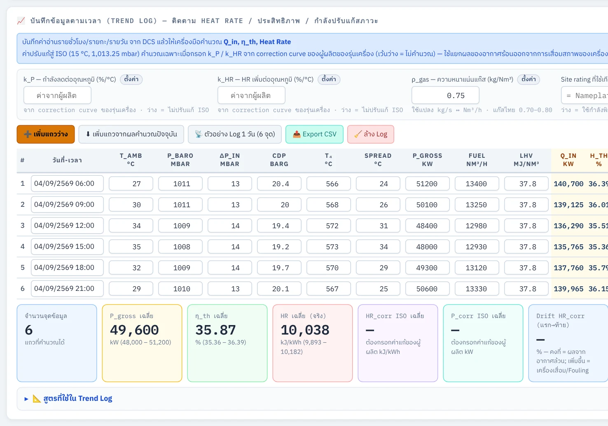
1
2
3
4
1
k_P — กำลังลดต่ออุณหภูมิ (%/°C) จาก correction curve
2
k_HR — HR เพิ่มต่ออุณหภูมิ (%/°C)
3
⬇ เพิ่มแถวจากผลคำนวณปัจจุบัน
4
ตารางบันทึก: เวลา · T_amb · P_baro · CDP · T₄ · P_gross · Fuel · LHV → Q_in · η_th · HR
ภาพนี้คือตัวอย่าง Log 1 วัน ของเครื่องมือ (6 จุด · ข้อมูลสมมุติ) — กดปุ่มตัวอย่างดูวิธีกรอก
เว้น k_P / k_HR ว่าง = ไม่คำนวณค่าปรับแก้ ISO — ต้องใช้ค่าจาก correction curve ของรุ่นเครื่องเท่านั้น
Export CSV ได้จากปุ่มบนกล่องนี้
💡 เคล็ดลับ
ใช้แยกผลของอากาศร้อนออกจากการเสื่อมสภาพของเครื่อง (ข้อความของเครื่องมือ)
กล่องเตือน ⛔: กรอกความดันบรรยากาศผิดหน่วย
คู่มือใช้งาน · ประสิทธิภาพกังหันก๊าซ (Gas Turbine Performance Calculator) · ระดับ Free
29 / 37
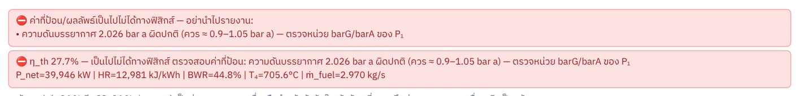
1
1
กล่องแดง ⛔ ค่าที่ป้อน/ผลลัพธ์เป็นไปไม่ได้ทางฟิสิกส์ — อย่านำไปรายงาน
กรอก 1.013 ในโหมด barG: เครื่องมืออ่านเป็น 2.0173 barA หน้าคอมเพรสเซอร์ → rₚ เหลือ 6.65 · η_th 27.7 % ป้าย ⛔ ตรวจสอบ
แก้: กรอก 0.000 barG หรือกดปุ่มหน่วยเป็น barA ก่อนกรอก 1.013
⚠️ ระวัง
เห็นกล่อง ⛔ ให้ตรวจค่าที่กรอกทีละช่องตามข้อความในกล่องก่อนอ่านผลใด ๆ
สัญญาณเตือนอื่น ๆ และวิธีแก้
คู่มือใช้งาน · ประสิทธิภาพกังหันก๊าซ (Gas Turbine Performance Calculator) · ระดับ Free
30 / 37
| เห็นอะไร | สาเหตุที่พบบ่อย | ทำอย่างไร |
|---|---|---|
| ⚠ rₚ ≤ 1 | P₂ ต่ำกว่า P₁ หรือกรอกผิดหน่วย | ตรวจ CDP และหน่วย barG/barA |
| ⛔ TIT ≤ T₂ | TIT ต่ำเกินหรือ rₚ / η_c ผิด | ตรวจ TIT จาก datasheet |
| ⛔ η_th นอกช่วง 0–60 % | P_elec วัด ṁ_a หรือ LHV ผิด | ตรวจหน่วยของ LHV และไฟฟ้า |
| แถบเหลือง “ค่า input เปลี่ยน” | แก้ค่าแล้วยังไม่กดคำนวณ | กด ▶ คำนวณประสิทธิภาพ |
| T₄ คำนวณไม่ตรง DCS | η_t หรือ TIT ไม่ตรงสภาพเครื่อง | ปรับ η_t จน T₄ ตรง (วิธีของเครื่องมือ) |
ตัวอย่างเคสหลัก: กล่อง ⛔ ไม่ขึ้น และสมดุลพลังงาน ✓ OK (≤ 1 %)
ข้อจำกัดของเครื่องมือ
คู่มือใช้งาน · ประสิทธิภาพกังหันก๊าซ (Gas Turbine Performance Calculator) · ระดับ Free
31 / 37
| เรื่อง | ข้อจำกัด | ทำอย่างไร |
|---|---|---|
| ṁ_a | เป็นช่องกรอก ไม่ปรับตามอุณหภูมิเอง | หาใหม่ด้วยตัวช่วย ②–④ ทุกสภาวะ |
| TIT | มักไม่วัดตรง (ค่าคำนวณของ OEM) | ใช้ datasheet และตรวจ T₄ เทียบ DCS |
| สภาวะคงที่ | สมดุลพลังงานใช้กับโหลดคงที่ | เก็บค่าเฉลี่ยช่วงเดียวกัน ≥ 30 นาที |
| เกณฑ์ป้ายและระดับ η_th | ค่าแนวทางของเครื่องมือ ไม่ใช่มาตรฐาน | เทียบค่าพิกัดหรือค่ารับประกันของเครื่อง |
| ปรับแก้ ISO | ต้องมี k_P / k_HR ของผู้ผลิต | ไม่มีค่า = ไม่ปรับแก้ |
| การทดสอบรับรอง | ไม่ใช่การทดสอบสมรรถนะเต็มรูปแบบ | งานรับประกันใช้วิธีทดสอบตามมาตรฐาน |
⚠️ ระวัง
ผลของเครื่องมือเป็นการประเมินหน้างาน — ระบุที่มาของ ṁ_a (วัด / คำนวณย้อน) ฐาน Q_in และช่วงเวลาเก็บข้อมูลในรายงานทุกครั้ง
บันทึกและเปิดไฟล์งาน (💾 JSON · 📂 โหลด)
คู่มือใช้งาน · ประสิทธิภาพกังหันก๊าซ (Gas Turbine Performance Calculator) · ระดับ Free
32 / 37
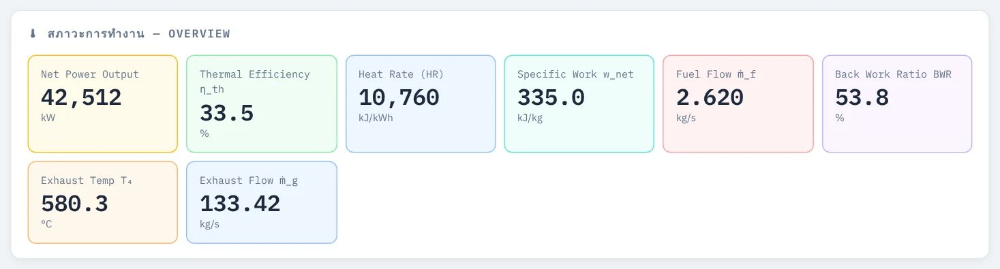
1
2
3
1
Net Power ของไฟล์ 42,512 kW
2
η_th 33.5 %
3
Heat Rate 10,760 kJ/kWh
ปุ่ม 💾 JSON บนหัวเครื่องมือบันทึกช่องกรอก ตารางบันทึกข้อมูล และ Trend Log เป็นไฟล์เดียว · ปุ่ม 📂 โหลด เปิดไฟล์กลับมา
ตัวอย่าง: เปิดไฟล์รอบวัดก่อนหน้า — โรงงาน A — กังหันก๊าซผลิตไฟฟ้า (รอบวัดก่อนหน้า · เคสสมมุติ) · วันที่ 25/10/2569 · T₁ 29 °C · ṁ_a 130.8 kg/s
เครื่องมือคำนวณให้ทันทีหลังโหลด (ภาพนี้ไม่ได้กดคำนวณซ้ำ) · ไฟล์เดียวกันเปิดในการ์ด Pro TH-GTB-01 ได้ ผลเท่ากัน
⚠️ ระวัง
โหลดไฟล์แล้วค่าที่กรอกอยู่ในหน้าถูกแทนทั้งหมด (รวมตารางตัวแปรและ Trend Log) — บันทึก JSON งานปัจจุบันก่อน
ข้อผิดพลาดที่พบบ่อย
คู่มือใช้งาน · ประสิทธิภาพกังหันก๊าซ (Gas Turbine Performance Calculator) · ระดับ Free
33 / 37
✗ กรอก 1.013 ในโหมด barG
✓ ระดับน้ำทะเล = 0.000 barG — ไม่งั้นขึ้น ⛔
✗ ใช้อุณหภูมิภายนอกเป็น T₁
✓ มี Evap/Fogging ต้องใช้ค่าหลังระบบ (CTIM)
✗ P₂ เอาความดันเชื้อเพลิงมาใส่
✓ P₂ = CDP ขาออกคอมเพรสเซอร์
✗ ไม่กดตัวช่วย ṁ_a ใหม่
✓ แก้ T₁ / rₚ / TIT แล้วกดตัวช่วยอีกครั้ง
✗ LHV เป็น MJ/Nm³
✓ หารความหนาแน่นก่อนกรอก kJ/kg
✗ แก้ค่าแล้วไม่กดคำนวณ
✓ ดูแถบเหลือง “ค่า input เปลี่ยน”
✗ เทียบพิกัด ISO กับวันร้อน
✓ กำลังต่ำกว่าพิกัดไม่ได้แปลว่าเสื่อมเสมอ
✗ เห็น “ตรวจสอบค่า” แล้วสรุปว่าดีขึ้น
✓ ทวนเครื่องวัด · LHV/HHV · ฐานพิกัดก่อน
แบบฝึกหัด: โรงงาน B
คู่มือใช้งาน · ประสิทธิภาพกังหันก๊าซ (Gas Turbine Performance Calculator) · ระดับ Free
34 / 37
| ข้อมูล | ค่า |
|---|---|
| T₁ · ความดันบรรยากาศ · RH · ΔP_inlet | 30 °C · 0.000 barG · 70 % · 10 mbar |
| กรอก rₚ ตรงจาก datasheet · η_c | 15 · 85 % |
| ṁ_a (datasheet) · TIT · η_cc | 160 kg/s · 1,180 °C · 99 % |
| LHV · η_t · η_mech · η_gen · ΔP_exh | 49,000 kJ/kg · 87.5 · 98.5 · 98 % · 8 mbar |
| พิกัด: กำลัง · η_th · HR | 52,000 kW · 33.5 % · 10,746 |
| P_elec วัดได้ (ขั้นที่ 2) | 51,500 kW |
คำถาม — กรอกแล้วตอบ
1
ขั้น 1 (ไม่กรอก P_elec): P_electric ____ kW · η_th ____ %
2
Heat Rate ____ · BWR ____ % · T₄ ____ °C
3
ขั้น 2 (กรอก P_elec 51,500): η_th ____ % · HR ____
4
กำลังต่างจากพิกัด ____ · ป้าย HR ____
💡 เคล็ดลับ
เลือกวิธีกำหนดความดัน “กรอก rₚ ตรงจาก Datasheet” ก่อน · ทำขั้น 1 กดคำนวณ แล้วกรอก P_elec กดคำนวณอีกครั้ง
เฉลยแบบฝึกหัด โรงงาน B
คู่มือใช้งาน · ประสิทธิภาพกังหันก๊าซ (Gas Turbine Performance Calculator) · ระดับ Free
35 / 37
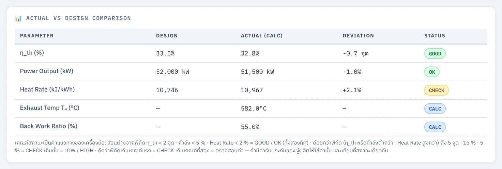
1) Brayton: P_electric 53,010 kW · η_th 33.8 % (rₚ ที่ใช้ 15.000)
2) HR 10,655 kJ/kWh · BWR 55.0 % · T₄ 582.0 °C · ṁ_fuel 3.202 kg/s
3) กรอก P_elec 51,500 kW: η_th 32.8 % · HR 10,967 (Q_in เท่าเดิม 156,895 kW)
4) กำลังต่างจากพิกัด -1.0% (OK) · HR +2.1% ป้าย CHECK
✓ ผ่าน
ไฟฟ้าที่วัดได้ต่ำกว่าแบบจำลอง = η ที่กรอก (η_c · η_t) ดีกว่าเครื่องจริง — ทบทวนด้วย T₂ เทียบ CDT และ T₄ เทียบ DCS · ภาพคือตาราง Comparison (ขั้น 2)
แหล่งอ้างอิงที่เครื่องมือใช้
คู่มือใช้งาน · ประสิทธิภาพกังหันก๊าซ (Gas Turbine Performance Calculator) · ระดับ Free
36 / 37
| เรื่อง | แหล่ง (ตามที่เครื่องมือระบุ) | ใช้ที่ |
|---|---|---|
| วัฏจักร Brayton · Regenerative | Boyce, Gas Turbine Engineering Handbook, 4th Ed. (2012), Ch. 2–3 | แท็บ Brayton · สูตรคำนวณ |
| สมบัติก๊าซแปรตามอุณหภูมิ | NASA 7-coefficient polynomials (GRI-Mech 3.0) | ทุก State Point |
| ผลของ T_amb · ความดันบรรยากาศ | U.S. EPA, Catalog of CHP Technologies, Sec. 3 (2015) ข้อ 3.4.4.1–3.4.4.2 · HR ≈ 0.3 %/°C เป็นค่าแนวทางของเครื่องมือ เทียบข้อ 3.4.4.1 หน้า 3-10 | ตารางตัวแปร (วิธีใช้) |
| อุณหภูมิกระเปาะเปียก T_wb | Stull (2011) — จาก T_amb และ RH | ปุ่มดึงค่าในตารางตัวแปร |
| สภาวะอ้างอิง ISO | 15 °C · 1,013.25 mbar · ค่าแก้จาก correction curve ของผู้ผลิต | Trend Log · สูตรปรับแก้ |
| เกณฑ์ป้าย · ระดับ η_th · ช่วงตัวแปร · ค่า Sensitivity อื่น | ค่าแนวทางของเครื่องมือ — ยึดค่า OEM / Commissioning ของเครื่องจริง | Comparison · ตารางตัวแปร |
💡 เคล็ดลับ
คู่มือนี้ไม่เพิ่มเกณฑ์หรือค่าตัวเลขนอกเหนือจากที่เครื่องมือแสดง
สรุป 1 หน้า (พิมพ์ติดไว้ข้างคอมพิวเตอร์)
คู่มือใช้งาน · ประสิทธิภาพกังหันก๊าซ (Gas Turbine Performance Calculator) · ระดับ Free
37 / 37
1
แถบข้าง
T₁ (หลังระบบลดอุณหภูมิ) · ความดันบรรยากาศ barG · ΔP · RH
2
แถบข้าง
ชนิด Inlet Cooling · วัด P₂ (CDP) · η_c
3
แถบข้าง
ṁ_a: วัดได้ หรือกดตัวช่วย ② ③ ④
4
แถบข้าง
TIT · LHV · η_t · η_mech · η_gen · ΔP_exh · พิกัด → กดคำนวณ
5
ผลลัพธ์หลัก
η_th · Heat Rate · BWR · T₂ / T₄ เทียบ DCS
6
Energy Balance · Comparison
สมดุลปิด ≤ 1 % · ส่วนต่างจากพิกัด
อ่านผลแล้วตรวจ
☐
P₁ = P_baro − ΔP_inlet
☐
rₚ = P₂(abs) ÷ P₁(abs)
☐
η_th = P_elec ÷ (ṁ_f × LHV)
☐
HR = 3,600 ÷ η_th
☐
กล่อง ⛔ = ห้ามรายงาน
อ.หนึ่ง กลับทวี / Aj. Nueng Klubtavee
tripleeenergytools.com
tripleeenergytools.com